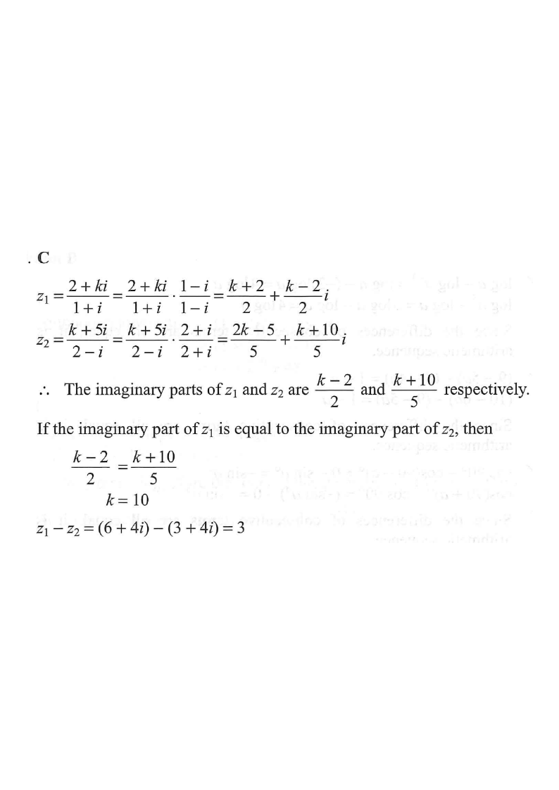

Define
$$z_1=\frac{2+ki}{1+i}\qquad\text{and}\qquad z_2=\frac{k+5i}{2-i},$$
where $k$ is a real number. If the imaginary part of $z_1$ is equal to the
imaginary part of $z_2$, then $z_1-z_2=$
A. $-20$
B. $0$
C. $3$
D. $10$

Figure (original exam diagram)
1Realise the denominator of $z_1$
Multiply numerator and denominator by the conjugate $1-i$:
$$z_1=\frac{2+ki}{1+i}\cdot\frac{1-i}{1-i}
=\frac{2-2i+ki-ki^2}{1^2-i^2}
=\frac{(2+k)+(k-2)i}{2}$$
$$\therefore\; z_1=\frac{k+2}{2}+\frac{k-2}{2}\,i$$
Use $i^2=-1$ so that $(1+i)(1-i)=2$.
Rationalising a Complex Denominator\(\dfrac{a+bi}{c+di}=\dfrac{(a+bi)(c-di)}{c^{2}+d^{2}}\)Multiplying by the conjugate \(1-i\) uses \((1+i)(1-i)=2\), a real number.
2Realise the denominator of $z_2$
Multiply numerator and denominator by the conjugate $2+i$:
$$z_2=\frac{k+5i}{2-i}\cdot\frac{2+i}{2+i}
=\frac{2k+ki+10i+5i^2}{2^2-i^2}
=\frac{(2k-5)+(k+10)i}{5}$$
$$\therefore\; z_2=\frac{2k-5}{5}+\frac{k+10}{5}\,i$$
Again $(2-i)(2+i)=4+1=5$, a real number.
3Equate the imaginary parts
$$\operatorname{Im}(z_1)=\frac{k-2}{2},\qquad \operatorname{Im}(z_2)=\frac{k+10}{5}$$
Since they are equal:
$$\frac{k-2}{2}=\frac{k+10}{5}$$
$$5(k-2)=2(k+10)$$
$$5k-10=2k+20$$
$$3k=30 \quad\Longrightarrow\quad k=10$$
Cross-multiply, collect $k$ on one side.
Equality of Complex Numbers\(a+bi=c+di\ \Longleftrightarrow\ a=c\ \text{and}\ b=d\)Equating imaginary parts gives \(\dfrac{k-2}{2}=\dfrac{k+10}{5}\), so \(k=10\).
The imaginary parts are both $4$, confirming the condition — so $z_1-z_2$ is purely real.
Subtraction of Complex Numbers\((a+bi)-(c+di)=(a-c)+(b-d)i\)With \(z_{1}=6+4i\) and \(z_{2}=3+4i\), the imaginary parts cancel and \(z_{1}-z_{2}=3\).
Answer: C — $3$
(Check: $\operatorname{Im}(z_1)=\operatorname{Im}(z_2)=4$ ✓, and $z_1-z_2=3$.)
PRACTICESimilar question — try it yourself
Question. Define \(z_{1}=\dfrac{3+ki}{1+i}\) and \(z_{2}=\dfrac{k+9i}{2-i}\), where \(k\) is a real number. If the imaginary part of \(z_{1}\) equals the imaginary part of \(z_{2}\), then \(z_{1}-z_{2}=\) A. \(3\) B. \(5\) C. \(7\) D. \(10\) [1 mark]
Show the worked solution
Step 1. \(z_{1}=\dfrac{3+ki}{1+i}\cdot\dfrac{1-i}{1-i}=\dfrac{(3+k)+(k-3)i}{2}\), so \(\operatorname{Im}(z_{1})=\dfrac{k-3}{2}\).
Step 2. \(z_{2}=\dfrac{k+9i}{2-i}\cdot\dfrac{2+i}{2+i}=\dfrac{(2k-9)+(k+18)i}{5}\), so \(\operatorname{Im}(z_{2})=\dfrac{k+18}{5}\).
Step 3. Equate the imaginary parts: \(5(k-3)=2(k+18)\), i.e. \(5k-15=2k+36\), so \(3k=51\) and \(k=17\).
Step 4. Then \(z_{1}=\dfrac{20+14i}{2}=10+7i\) and \(z_{2}=\dfrac{25+35i}{5}=5+7i\).
Step 5. \(z_{1}-z_{2}=(10+7i)-(5+7i)=5\). Both imaginary parts are \(7\), confirming the condition.